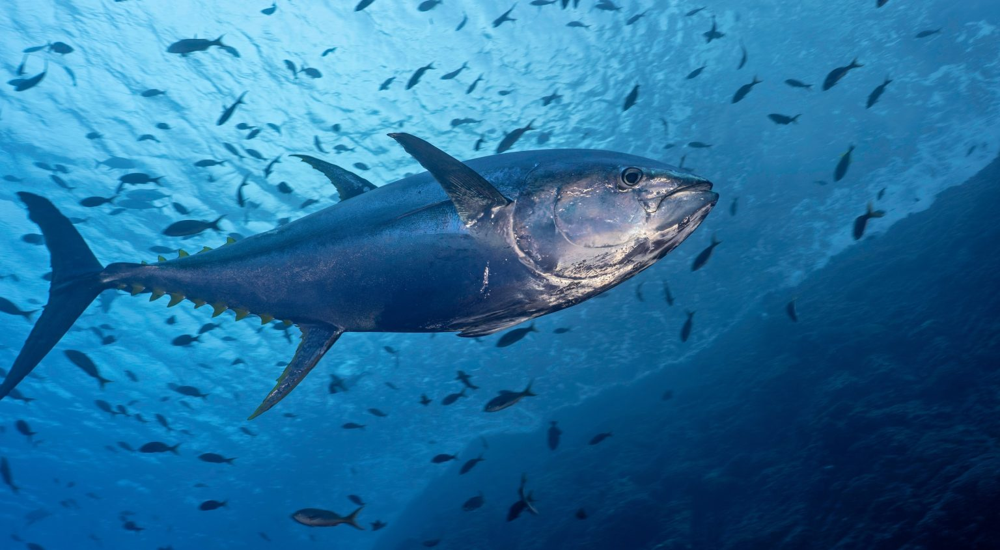
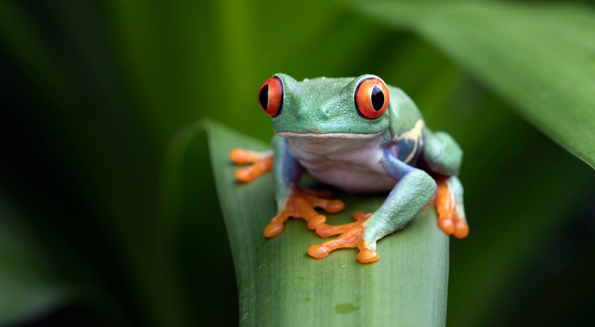
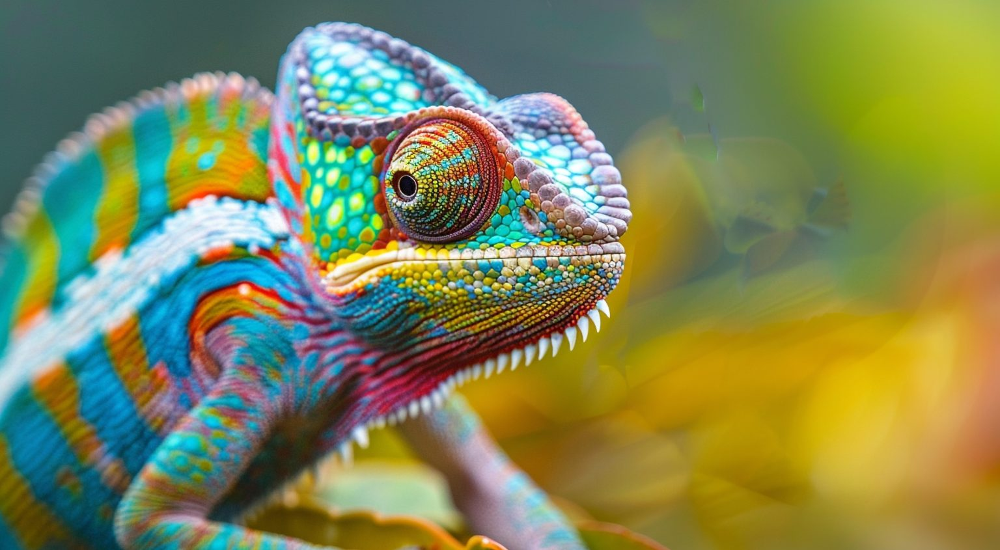
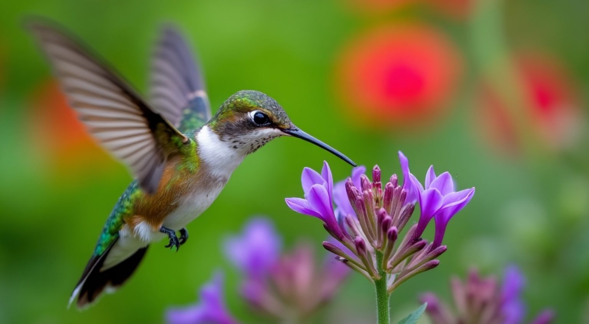
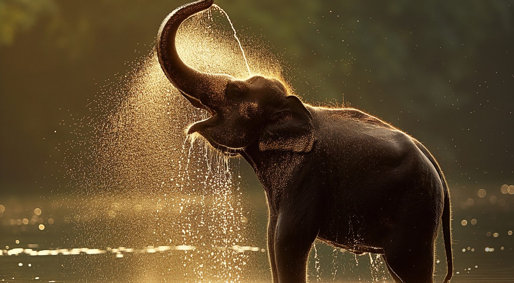

Explicamos qué son los vertebrados, sus características, clasificación y damos varios ejemplos
¿Qué son los animales vertebrados?
Los animales vertebrados son aquellos que poseen columna vertebral. En este grupo se clasifican muchos de los animales mejor conocidos y estudiados del reino animal, pues en él se incluyen los reptiles, las aves, los anfibios, los peces y los mamíferos.
El grupo de los animales vertebrados es el que tiene a los animales con los que el ser humano está más familiarizado, incluyendo los animales de compañía y los animales de consumo como el cerdo, gallina o vaca son animales vertebrados. Además, son vertebrados los animales más grandes del planeta. Ejemplos de animales vertebrados son el elefante africano, la jirafa, el rinoceronte gris, el tiburón toro, la ballena azul, el perro, el lobo europeo, los leones, las cebras, la cobra real, la pitón reticulada, el avestruz, el atún amarillo, la rana común, el sapo europeo o la orca.
Características de los vertebrados
El cocodrilo es un animal vertebrado
- 🌱Tienen columna vertebral
Los animales vertebrados poseen una columna vertebral y vértebras que la acompañan. Esto los diferencian de los animales invertebrados, que no poseen ni columna vertebral ni vértebras.
- 🌱Compuestos por células eucariotas
Así como todos los organismos que consideramos “animales”, los vertebrados están compuestos por células eucariotas que poseen un núcleo membranoso donde se encierra el ADN y que tienen otros orgánulos internos esenciales como mitocondrias, lisosomas, complejo de Golgi o retículo endoplásmico.
- 🌱Organismos heterótrofos
Los vertebrados son organismos heterótrofos, es decir, que sus células no son capaces de sintetizar su propio alimento y deben obtenerlo a partir de la materia orgánica extraída de otros organismos vivos.
Si los vertebrados obtienen alimento de origen vegetal son herbívoros y si lo hacen de animales son carnívoros.
- 🌱Cuerpo
Todos los animales vertebrados tienen una cabeza bien definida, una región torácica o “troncal” y una porción caudal o una “cola”. Generalmente alcanzan grandes tamaños, gracias a la presencia de un endoesqueleto bajo la piel.
Dicho endoesqueleto permite el soporte de sus órganos internos y se asocia con músculos y articulaciones, los cuales hacen posible el desplazamiento y otras acciones motoras, así como la protección de órganos delicados.
- 1. En la región cefálica (la cabeza) se encuentra un cerebro y tres órganos sensoriales: el del olfato, el de la vista y el de la audición.
- 2. La región troncal o torácica consiste en una cavidad bilateral (que si corta a la mitad produce dos porciones casi idénticas) que contiene las vísceras.
- 3. Usualmente la porción caudal contiene los orificios de salida del sistema digestivo y excretor (para las heces y la orina).
- 🌱Hábitat
Los animales vertebrados son un grupo diverso desde el punto de vista de tamaño, forma, nutrición, hábitos y ciclo de vida. Ocupan ambientes marinos, de agua dulce, ambientes terrestres e incluso aéreos, por lo que exhiben una amplia gama de estilos de vida.
- 🌱Reproducción
Todos los animales vertebrados se multiplican por reproducción sexual, por lo que no es común observar poblaciones clonales de animales vertebrados, es decir, organismos idénticos a su progenitor
- 🌱Diversidad entre los vertebrados
Se estima que este grupo contiene aproximadamente unas 45 mil especies de animales, muchas de las cuales se distribuyen desde el Ártico o el Antártico hacia las regiones tropicales del planeta.
El único lugar donde no se han detectado vertebrados es en el interior de la Antártida, en las zonas más frías de Groenlandia y en la “bolsa de hielo” del Polo Norte, pero están prácticamente en todos los ecosistemas de la biosfera.
Clasificación: tipos de vertebrados
Veamos cuáles son las clases principales de vertebrados:
- 🌱Reptiles (clase Reptilia)
- 🌱Aves
- 🌱Mamíferos (clase Mammalia)
- 🌱Agnatos (clase Agnatha)
- 🌱Condricticios (clase Chondrichthyes)
.jpg)
|
 |  |
|  |  |  |
|
La clasificación biológica tradicional de los animales vertebrados distingue entre diez clases distintas, agrupadas del siguiente modo:
|
|||
|
A diferencia de los vertebrados, los animales invertebrados son todas aquellas especies que no tienen columna vertebral ni un esqueleto interno. Cerca del 95 % de las especies vivas conocidas son invertebrados (entre 1,7 y 1,8 millones de especies, según cifras de 2005). El grupo de los animales invertebrados es muy diverso. Entre ellos, se encuentran las esponjas, las medusas, las estrellas de mar, los gusanos, las hormigas, las arañas, los cangrejos, los pulpos y los caracoles. |
|||
|
Existen muchos ejemplos de animales vertebrados: |
|||
Mamifero
|
|||
Anfibios
|
|||
Peces
|
|||
Aves
|
|||
Reptiles
|